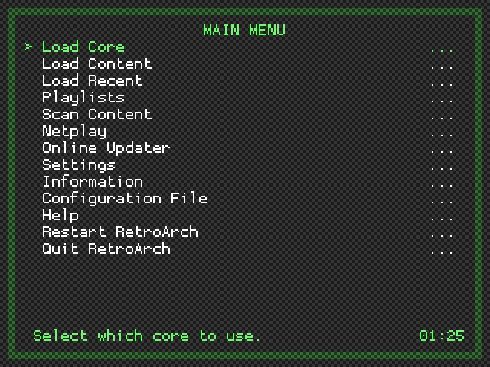

RGUI RetroArch Menu Interface¶
RGUI is a simple built-in GUI for RetroArch. It was originally introduced in the Wii port of RetroArch in order to provide the console experience, where everything is controlled from a joypad. RGUI was later refitted for PC and mobile ports.

Features¶
While RGUI cannot configure absolutely everything, it can do the most common things you would want to do while using RetroArch.
- Selecting libretro core
- Load a game
- Tweak per-libretro core options (e.g. colorization in GameBoy)
- Load game from history (previous games played)
- Save/load savestates
- Configure shaders
- Configure aspect ratios
- Configure integer scale
- Toggle fullscreen
- Swap disk images (needed for PlayStation, see notes below!)
- Take screenshots
- Enable/disable real-time rewind
- Simple input configuration
- Mute/unmute audio
- Exit RetroArch
Config file¶
By default, RetroArch looks for a config in various places depending on OS:
- Linux/OSX:
$XDG_CONFIG_HOME/retroarch/retroarch.cfg, then~/.config/retroarch/retroarch.cfg, then~/.retroarch.cfg, and finally, as a fallback,/etc/retroarch.cfg. - Windows:
retroarch.cfgin same folder asretroarch.exe, then%APPDATA%\retroarch.cfg.
To override this, use retroarch --config customconfig.cfg. If you have some special options you want to store in separate config files you can use retroarch --config baseconfig.cfg --appendconfig specialconfig.cfg. See man-page and/or --help for detail.
Warning¶
While you are changing settings in runtime, they are not saved to disk afterwards on PC by default. If you want RetroArch to automatically write back the config, either set config_save_on_exit = true in config, or enable this under Settings -> Config Save On Exit from within RGUI.
By design, the config file is considered immutable as it is likely maintained by the user, and should not be overwritten behind the users back. This is not the case on consoles however, where looking at the config manually isn't really an option for most users.
Entering the menu¶
- By default on PC, the F1 button will enter the menu.
- To exit the menu, use F1 or
Resume Game. - To start immediately in RGUI without any game or core loaded, use the
--menucommand line option. As a special case, if no arguments are received, it is treated the same as runningretroarch --menu.
Menu toggle button can be mapped to a controller as well, see option input_menu_toggle option in retroarch.cfg.
Navigating the menu¶
RGUI is controlled like any other libretro core. Regular input binds will apply, and binds here are defined in terms of the RetroPad, RetroArch's joypad abstraction.
- A button (Default PC: X): Accept/OK
- B button (Default PC: Z): Back/Cancel
- Start (Default PC: Return): Go to main settings menu
- Select (Default PC: Right shift): Set a setting to default
- Up/Down D-pad (Default PC: Up/Down keys): Browse settings/files
- Left/Right D-pad (Default PC: Left/Right keys): Toggle settings, or browse several items at once in file browser.
Searching through lists with keyboard¶
When using a keyboard, it can be slow to navigate a large list using gamepad-like controls. To help this, you can type / (forward slash) at any time to bring up a search-box. Type a search string and hit return. The cursor should jump to the first entry that matches. The search will match mid-path strings. However, if a match is found at the beginning of the path, like when searching for first letter, the start-of-path match will take priority.
The forward slash is recognized on character basis, not on the key itself. This allows e.g. norwegian layouts to type forward slash using shift + 7. Characters which are outside the ASCII set are recognized but ignored as RGUI cannot render such characters anyways.
Thumbnails¶
RGUI thumbnail support requires the use of playlist files and thumbnail image packs, as described in ROMs, Playlists, and Thumbnails.
To view existing playlists choose Load Content from the top menu, then Collections. Select a playlist, and while browsing its contents use the RetroPad Y button to toggle the display of the thumbnail associated with the currently highlighted entry:
Thumbnails off:

Thumbnails on:
Note that it is possible to navigate up and down through a playlist while thumbnails are being shown.
To choose which type of thumbnail will be displayed, from the top menu select Settings > User Interface > Appearance and set the Thumbnails option to one of:
-
Screenshots
-
Title Screens
-
Boxarts
Any thumbnail image larger than 320x240 will be downscaled automatically to fit the screen. Three downscaling methods are provided, allowing a choice between performance and quality. To switch between them, from the top menu select Settings > User Interface > Appearance and set the Thumbnail Downscaling Method option to one of:
-
Nearest Neighbour (Fast): Simple (pixelated) nearest neighbour scaling. Has a very low impact on performance, and should be usable on any hardware.
-
Bilinear: Smooth (although potentially blurry) resampling. Slower than nearest neighbour, but should be usable on most hardware.
-
Sinc/Lanczos3 (Slow): High quality resampling (although sometimes generates artefacts when source image contains dithering). May cause lag on very low end devices, but has no discernable performance impact on desktop-class hardware.
Starting a game¶
- To load a game you need a libretro core to use, and a ROM.
- Selecting
Corefrom top menu, you can browse for a libretro implementation. - Where the browser starts depends on your
libretro_pathconfig. - If blank, it will start in root (tedious to browse). If
libretro_pathis a directory, RGUI will use that as top folder. Iflibretro_pathis a full path, it will start in the folder where the file is.
After loading a libretro core, you will see the name and version of the core in lower part of screen. You can then browse for a ROM with Load Game. To control where RGUI starts to browse for roms, set rgui_browser_directory in config. If not set, it'll start in root.
The browser will filter out extensions for the last core set in Core, and use that core when a ROM is loaded. If libretro_path in config is set with a full path to a core, this core is automatically selected once RGUI boots up (but you can still change the core afterwards).
Applying shaders¶
See the shaders user guide.
Configuring input¶
Currently you can configure two settings per player (on PC):
- Device: Picks which gamepad to use for player N. The name of the pad is available.
- Device Type: Picks which device type to use. This is relevant for the libretro core itself, and mostly useful for PlayStation, which needs to know if you're using a DualAnalog device or not.
Configuring controller input¶
Configuring controller input is supported from within RGUI.
Normal gameplay binds as well as RGUI hotkey binding is supported. It is possible to bind everything in succession for convenience.
Configuring keyboard input¶
Configuring keyboard input is currently not supported. To configure keyboard binds, it must be done outside RGUI.
PlayStation disk swapping¶
Some PlayStation games require disk swapping. To manage disks, libretro has a concept of a disk index (like a multi-disk CD player, remember those? :P). If a PlayStation core is loaded, Disk Index and Disk Image Append options are added to main menu.
In Beetle PSX, multi-CD images are typically handled with an .m3u playlist. In this case, you can swap disks by cycling through the Disk Index setting. If you don't or can't use a playlist, you can append a disk image on the fly using Disk Image Append. In this case, you browse for a disk image and append it to the internal disk image list. The Disk Index is updated appropriately and you are returned to the game.
Workarounds¶
Replacing the disk inside RGUI is "physically" speaking the same as ejecting, swapping disks and closing the tray instantaneously. Some games will not work with this approach, notably Metal Gear Solid because they need to detect an actual eject taking place.
To work around this, set Disk Index to No Disk, and exit RGUI. The game will pick up that the tray has been ejected/missing disk after half a second or so. Now you can go back to RGUI, pick the correct disk index and return to the game.
Themes¶
The visual appearance of RGUI may altered by choosing one of 32 inbuilt color themes. From the top menu select Settings > User Interface > Appearance and cycle through the various Menu Color Theme options:
Setting Menu Color Theme to Custom allows for an even greater degree of personalisation via the use of custom menu theme presets. A number of examples are provided in the RetroArch assets package, which may be downloaded by selecting from the top menu Online Updater > Update Assets. To choose one of these examples, go to Settings > User Interface > Appearance and select the Custom Menu Theme Preset option. In the file browser that opens, navigate to the rgui directory and select a .cfg file.
Creating Custom Menu Theme Presets¶
A custom menu theme preset is a plain text configuration file (e.g. my_theme.cfg) with the following contents:
1 2 3 4 5 6 7 8 | |
-
rgui_entry_normal_color: Specifies the color of all 'normal' text displayed in any list.
-
rgui_entry_hover_color: Specifies the color of the currently selected entry, along with the core name and clock displayed at the bottom of the screen.
-
rgui_bg_dark/light_color: Specifies the menu background color. Setting
rgui_bg_dark_colorandrgui_bg_light_colorto different values creates a chequerboard effect. Also used for the background of message boxes, and the title text when displaying thumbnails. -
rgui_border_dark/light_color: Specifies the color of the border 'frame' drawn around the perimeter of the menu. Setting
rgui_border_dark_colorandrgui_border_light_colorto different values creates a chequerboard effect. Also used for the frame of message boxes. -
rgui_wallpaper: The relative file path to an optional wallpaper image. If this entry is omitted or left empty, no wallpaper is used.
Color Selection¶
All color values are given in 0xAARRGGBB 8-digit hex code format - i.e. the first two digits correspond to the alpha (transparency) value, while the remaining 6 are a normal hex triplet. For example: fully opaque red would correspond to 0xFFFF0000; 50% transparent green would correspond (approximately) to 0x7F00FF00.
For maximum legibility, the alpha value for all text colors should be set to FF (fully opaque). For the background and border, setting partial transparency allows the currently loaded content to be seen 'through' the menu when opening it while running a game. Note, however, that setting partial transparency causes colors to appear darker than expected, so careful tuning of the hex triplet values is required. Appropriate transparency values are as follows:
-
When creating a dark theme without wallpaper, the border/bg alpha component should be set to
C0. -
When creating a light theme without wallpaper, the border/bg alpha component should be set to
E0. -
When creating a theme with wallpaper, the border/bg alpha component should be set to
FF. (This is because it is very difficult to create a semi-transparent wallpaper image with proper colors, and so it is most practical to make everything fully opaque when using wallpapers)
Creating Wallpaper Images¶
RGUI wallpapers must have the following properties:
-
A resolution of exactly 320x240.
-
A color depth of 4 bits per pixel. (This is not strictly required, but using an image with greater color depth will not produce expected results)
Wallpapers should be generated in PNG format.
To produce a suitable image, the user should first create a regular 320x240 PNG file via any means at their disposal. Inkscape users may find the following simple template beneficial: rgui_wallpaper_template.svg
{kind=link}
Once the image is complete, it is necessary to reduce its color depth. This may be done via one of two methods:
1) pngquant (recommended):
pngquant is a command-line utility for lossy compression of PNG files. It supports very high quality conversion of images to indexed color, in a manner appropriate for most kinds of wallpaper.
Download/compile/install the latest version, then use the following command to process a wallpaper source file:
1 | |
Open the output WALLPAPER_NAME_indexed.png file and check that colors/gradients appear correct. In most cases, the result will be agreeable. If odd 'speckles' are apparent, it may be necessary to adjust the colors in the source image (this is a black art, and beyond the scope of this document). If the image has unacceptable, uncorrectable dithering then the WALLPAPER_NAME_indexed.png file should be discarded, and the following alternate method used instead:
2) GIMP:
GIMP is a well known image editor. In general it produces lower quality color reduction than pngquant, but it can handle certain gradients and patterns that cause pngquant to stumble. Download/install the latest version, then:
-
Open the wallpaper source file
-
From the menu, select
Image > Mode > Indexed... -
In the
Indexed Color Conversionpop-up, select:-
Generate optimum palette -
Maximum number of colors:16 -
Color dithering:EITHERFloyd-Steinberg (normal)ORFloyd-Steinberg (reduced color bleeding(use whichever looks best, but the other options here will not work) -
Press
Convert
-
-
Inspect the result. Some manual touch-up may be required. (If the image is disagreeable at this stage, then the wallpaper probably isn't going to work - so start over...)
-
If all is well, select from the menu
File > Export As...and name the fileWALLPAPER_NAME_indexed.png -
In the
Export Image as PNGpop-up, untickSave color values from transparent pixelsand clickExport
Whether pngquant or GIMP is used to create WALLPAPER_NAME_indexed.png, a final stage of optimisation should be applied to generate a 'clean' output wallpaper. This can be done using OptiPNG. Download/compile/install the latest version, then run the following command:
1 | |
Edit the custom menu theme preset configuration file such that rgui_wallpaper points to the resultant WALLPAPER_NAME.png image. Once appropriate text/background/border colors have been set, the theme is complete.